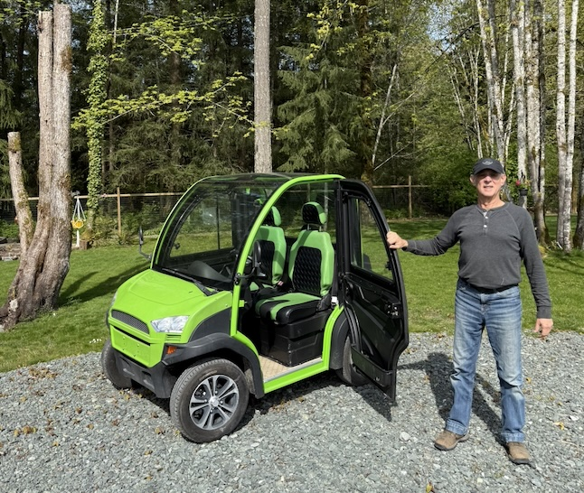

From Victoria to Courtenay — a dormant rail corridor with a new purpose.
The E&N Railway Corridor has sat unresolved for years. The tracks stretch 289 kilometres from Victoria north to Courtenay, passing through some of Vancouver Island's most significant communities and First Nations territories.
Rail reinstatement is prohibitively expensive leaving the corridor in limbo since passenger service was suspended in 2011.
Under BC Motor Vehicle Act Regulations Section 24.06, segments of the corridor would be converted into Neighbourhood Zero Emission Vehicle roadways: low-speed, affordable, and purpose-built for the electric future our governments are working toward.
Neighbourhood Zero Emission Vehicle — BC Motor Vehicle Act Regulations Section 24.06
means a vehicle that travels on four wheels and is powered by an electric motor that is designed to allow the vehicle to attain a speed of 32 kilometers per hour but not more than 40 kilometers per hour in a distance of 1.6 km on a paved level surface, and
(a) meets or exceeds standards of the Motor Vehicle Safety Act (Canada) for a low-speed vehicle and bears a compliance label for a low speed vehicle in accordance with that Act, or
(b) if imported to Canada, has been imported as an admissible low-speed vehicle in accordance with the Motor Vehicle Safety Act (Canada) requirements, and (i) bears a compliance label for a low-speed vehicle in accordance with that Act, or (ii) meets applicable federal United States laws in accordance with the Motor Vehicle Safety Act (Canada).
10.7 No person shall drive or operate a neighborhood zero emission vehicle on a street unless: (a) the street has a speed limit of 50 kilometers per hour or less; and (b) the person drives or operates the neighbourhood zero emission vehicle in the lane on the street closest to the right hand curb or shoulder, except to make a left hand turn or to pass another vehicle.
The primary benefit of conversion isn't the pathway itself — it's what the pathway enables. Public or private access will allow "a billion dollars in development" along the length of the corridor.
Potential development along the corridor includes:
Route: Victoria to Courtenay, Vancouver Island, BC
Length: 289 kilometres
First Nations Territories: 14
Regional Districts: 5
Governing Regulation: BC MVA s.24.06
Vehicle Speed: Up to 40 km/h
Surface Options: Gravel, concrete, asphalt, wood
On reserve land in unorganized areas, an NZEV road use permit from the BC Minister of Transportation replaces the municipal bylaw requirement.
Extensions into adjacent Electoral Area lands require a Joint Use Agreement & Restrictions between the Nation, the BC Ministry of Transportation, and neighbouring corridor landowners.
A government-backed clean energy project of this scale represents a significant IPO opportunity.


The ICF holds corridor-wide stewardship. Nations exercising reversion rights can retain ICF membership — preserving their seat at the table for corridor-wide decisions and eligibility for provincial and federal grants.

The District has provided significant case study material for developing this program. The Chemainus corridor section is another excellent option for a pilot.
The FCM could become a key partner in the pilot to scale the model beyond Vancouver Island.

The CEA supports clean energy integration in BC communities — a natural ally for the energy infrastructure dimension of the corridor development program.
Conversations are underway. What's missing is the will to act. Federal dollars are available — if we don't move decisively, they'll find other projects in other provinces.
Get Involved